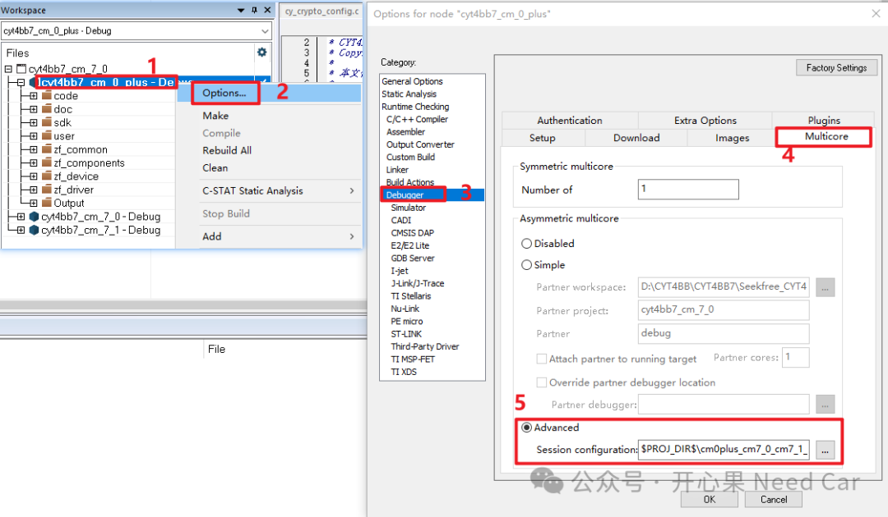
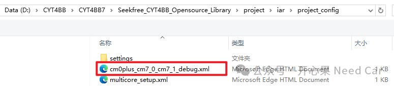
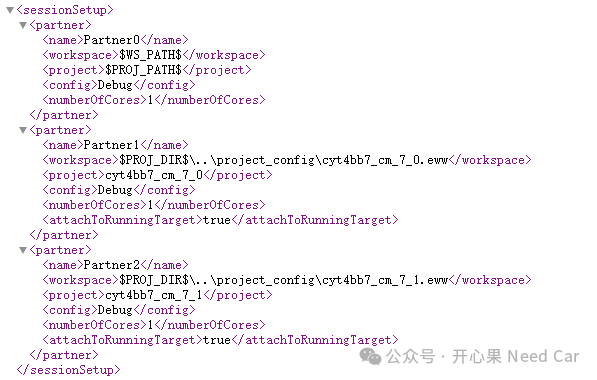
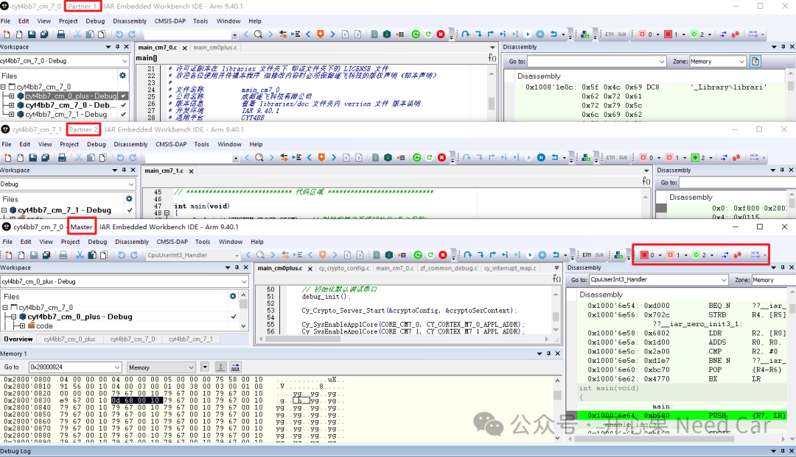

开心果 Need Car · 2025-01-03T06:36:00+08:00 · 微信原文
2、多核Debug配置加载操作
通过脚本（*.xml）加载多核的基本操作步骤：右击当前激活（Active）的工程->Options...->Debugger->Multicore->Advanced->加载多核调试的配置文件，示意如下：

多核调试的配置文件示意如下：

多核调试的配置文件内容示意如下：

多核调试调试界面，示意如下：

https://gitee.com/seekfree/CYT4BB7_Library
往期精彩回顾